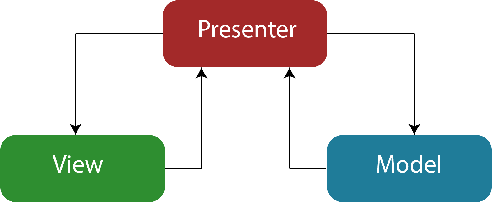

Arquitetura
Modelo de Projeto - MVP | PT_BR

Definições
Nodos: Nodos são classes que representam folhas na árvore de navegação. Todos os nodos são instanciados durante a fase de boot da aplicação e nunca são liberados da memória. Uma instância de nodo pode possuir n filhos, mas somente um pai. É possível que na árvore de navegação exista mais de uma folha para o mesmo tipo de nodo, desde que seus pais sejam diferentes.
Presenters: Apresentadores são classes que fazem o intermédio da camada de visão com a camada de modelo. Não devem possuir lógica de negócio e chamadas da visão para o apresentador nunca devem esperar por um retorno.
Views: Views são classes que representam como a página é apresentada ao usuário do sistema. Não devem conter lógica de negócios e não podem fazer chamadas diretas para a camada de modelo.
ViewParameters: ViewParameters são classes utilizadas para configurar como a visão deve ser apresentada. Sua criação é feita no apresentador utilizando um serviço, mas sua utilização é feita pela visão. Um ViewParameters só é criado quando seu respectivo apresentador é criado (initialize = true).
Services: Serviços são classes responsáveis por aplicar as regras de negócio e, se necessário, fazer requisições ao banco de dados. Seus resultados sempre são retornados ao apresentador.
Forms: Forms são DTOs utilizados pela visão para preencher os dados apresentados.
Fluxo de navegação

- 1 - Usuário interage com um componente que irá levá-lo a outra página do sistema.
- 2 - O componente interagido avisa a visão sobre a interação do usuário.
- 3 - A visão repassa a requisição ao seu respectivo apresentador.
- 4 - O apresentador utiliza o nodo de origem para recuperar o nodo destino.
- 5 - O nodo destino é enviado ao CoreApplication para que ele inicie o processo de navegação através do método navigateTo. O primeiro passo é publicar na url todos os parâmetros utilizados pelo apresentador atual, isso é feito chamando o método publishParameters(CoreURL).
- 6 - A partir do nodo destino o CoreApplication instância o apresentador do nodo e faz a chamada do método applyParameters(CoreURL).
- 7 - Se necessário, o apresentador faz requisições ao serviço para validar regras ou recuperar registros do banco de dados.
- 8 - O serviço utiliza o EntityManager para criar uma conexão e executar uma transação na base de dados.
- 9 - O apresentador envia para a view o que ela precisa para se desenhar através do ViewParameters e logo em seguida envia para ela o form para preencher os componentes de acordo com os registros salvos no banco de dados.
ApplyParameters

O método applyParameters(CoreURL, boolean) do presenter é chamado a partir do seu nodo, quando o presenter é uma nova instância.
checkParentPresenters(CoreURL): Método utilizado para verificar se os presenters necessários para a execução do nodo corrente foram corretamente inicializados.
createUrlBinder(CoreURL): Método vazio que pode ser sobrescrito para instanciar um objeto do tipo UrlBinder.
readUrl(CoreURL): Método utilizado para ler os parâmetros publicados na url e, se necessário, salva-los em atributos para uso posterior.
beforeInitialize(CoreURL, boolean): Método executado antes da inicialização do apresentador. Um apresentador só é inicializado somente quando uma nova instancia sua é criada, o que ocorre somente quando o nodo daquele apresentador é adicionado na árvore de navegação.
initialize(CoreURL, boolean): Método abstrato utilizado para inicializar o apresentador. Instancia objetos que precisam estar prontos antes do refreshData. Os métodos getViewParameters e render normalmente são chamados durante a inicialização do apresentador.
afterInitialize(CoreURL, boolean): Método vazio que pode ser sobrescrito para instanciar objetos que precisam ser criados antes do refreshData e depois do initialize.
validateInitialization: Verifica se os objetos necessários para o correto funcionamento do apresentador foram criados.
refreshData(CoreURL): Verifica se a tela precisa ser atualizada e executa o método refresh, se necessário. Normalmente o método refresh é responsável por fazer a requisição ao serviço pedindo os dados salvos no banco de dados e repassando-os à visão, para que ela preencha os campos criados.
bindParentView(CoreURL, boolean): Envia ao presenter pai a view corrente para ela ser desenhada na tela.
keepGoing: Último método do applyParameters, responsável por fazer as últimas verificações e dizer se o fluxo de execução pode seguir adiante ou deve ser interrompido.
PublishParameters
O método publishParameters(CoreURL) é chamadado a partir do nodo, que repassa a chamada para o CoreApplication.
newURL(CoreApplication): Método chamado pelo nodo, que utiliza o CoreApplication passado como parâmetro para criar uma CoreURL e iterar sobre os apresentadores atachados.
for presenter in presenters atachados: Para cada apresentador atachado no CoreApplication é verificado se esse apresentador faz parte da árvore de navegação destino, se sim, o método publishParameters(CoreURL) do apresentador é chamado para que ele publique seus parâmetros na nova url. Todos os parâmetros não publicados são perdidos.
Exemplos
Exemplo do publishParameters ao clicar no botão de emitir parecer de uma solicitação na lista de propostas e obras